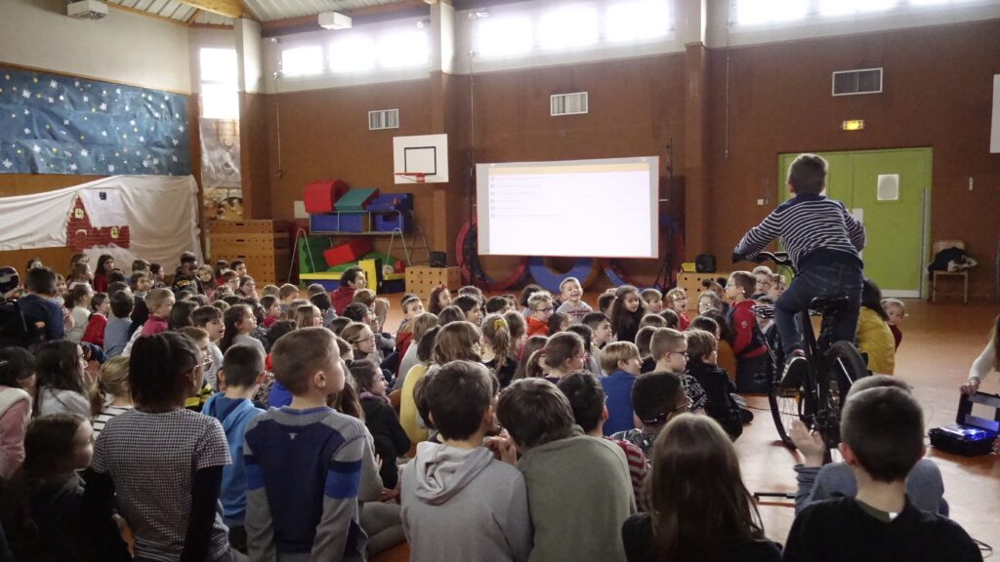

Nos programmes
Tournées estivales
Pédaler d’étape en étape durant plusieurs semaines pour proposer des projections en plein air dans des espaces naturels, patrimoniaux ou au cœur des communes, au plus près des habitants et des acteurs locaux :
c’est le concept des tournées proposées chaque été par Cinécyclo.
Les séances sont animées par nos Cinécyclistes qui effectuent à vélo le trajet entre les lieux de projection. Elles sont organisées avec différents partenaires : collectivités territoriales, associations, communautés de communes, véloroutes… Et d’autres porteurs d’initiatives inspirantes.
Les parcs régionaux ou nationaux sont des partenaires privilégiés pour ce format.
En effet, l’enjeu de nos projections est double et fait écho à la situation des parcs :
d’un côté, il s’agit de proposer des moments de réflexion et d’échanges autour des enjeux de préservation et de valorisation de l’environnement et des initiatives présentes dans ces territoires.
Par ailleurs, il s’agit de proposer aux habitants une programmation culturelle dans des communes où l’offre de proximité est souvent limitée.
Les séances ont lieu à la tombée de la nuit et durent environ une heure, avec un programme de courts métrages d’animation et documentaires tout public. Ces tournées singulières permettent de proposer une offre cinématographique originale et ouverte sur le monde, de rassembler les habitant.e.s autour d’un moment convivial et participatif.
Pour les partenaires, c’est aussi l’opportunité de communiquer sur des enjeux locaux et de valoriser des initiatives ou lieux de leur territoire.
Notre expérience s'est bâtie au fil des années grâce à des collaborations avec le PNR du Morvan, la Véloscénie, le Parc National des Forêts, le PNR du Haut-Jura ou encore de la Communauté de communes de Thann-Cernay.
C'est pour eux l’opportunité de communiquer sur leurs actions et de valoriser des initiatives ou lieux de leur territoire.
Programmes annuels et projections thématiques
Ces programmes co-construits avec nos partenaires nous permettent d’intervenir dans des territoires ou des quartiers, en direction de différents publics et de leur offrir des rendez-vous cinématographiques réguliers dans des lieux qu’ils fréquentent habituellement voire quotidiennement.
Plus qu’une simple prestation, nous envisageons ces programmes comme un réel moyen pour favoriser les coopérations entre acteurs locaux et Cinécyclo.
Ils permettent de proposer un travail de fond sur une thématique définie et donc pour chaque partenaire l’opportunité de créer de nouveaux liens avec leurs publics.
Nos partenaires dans le cadre de ces programmes :
centres sociaux, MJC, espaces culturels, acteurs de l’économie sociale et solidaire et de l’environnement.
Un exemple de programme pluri-annuel :
les Cinécyclubs avec l’Espace Baudelaire à Dijon. Des projections régulières et thématiques où nous proposons des films singuliers qui mobilisent les codes du cinéma et de l'audiovisuel pour montrer, dire, raconter le monde avec originalité et curiosité, proposer un regard décalé ou émerveillé .
Actions jeune public
Cinécyclo inscrit également son activité dans un volet d’éducation à l’image et de compréhension de ses mécaniques auprès des jeunes publics. Ces interventions sont aussi le moment d’entamer une réflexion autour des enjeux environnementaux et d’engagement citoyen, qui sont essentiels dans le développement d’un esprit critique. Cette stratégie se décline sous différentes formes en fonction des partenaires.
Chaque intervention fait l’objet d’une configuration unique, à partir d’un travail approfondi avec les enseignant.e.s et animateur.ices pour l’élaboration de la séance la plus pertinente possible en termes de support et d’animation pour le groupe concerné.
Tout au long de l’année, nous intervenons auprès d’élèves de différents cycles et avec différentes approches :
des projections ponctuelles dans le cadre d’un programme d’activités fixé par les enseignant.e.s / animateur.ice.s
des ateliers ludiques sur le fonctionnement du vélo où les enfants sont amenés à installer le kit de projection eux-mêmes
un programme de plusieurs séances axé autour d’une thématique qui peut être liée à l’énergie, à la biodiversité, à la solidarité internationale…
Ces interventions sont modulables en fonction des publics et des lieux :
en milieu scolaire (de l’élémentaire au lycée), dans les centre socioculturels, maisons des jeunes et de la culture, dans les médiathèques…
Projections ponctuelles
Cinécyclo est également présent, à la journée ou la soirée, dans différents événements locaux à la sollicitation de partenaires tels que des festivals de cinéma ou de solidarité, ou encore des animations culturelles locales.
Dans un souci de cohérence, nous nous déplaçons principalement en vélo ou en train.
Ce type de projection a donc exclusivement lieu dans un rayon proche des zones d’activités de nos projectionnistes, c’est-à-dire à proximité de Dijon, Toulouse, Chambéry et Nantes.
Rejoindre le Pôle Cinéma
Les actions de Cinécyclo ont pour objectifs de permettre à tout public l’accès à la culture, de favoriser le lien social et la convivialité autour du cinéma et de sensibiliser à l’écologie et à la solidarité. Ces contenus sont toujours associés à des films inspirants, humoristiques ou positifs, proposant en tous cas un regard cinématographique original sur certains sujets de société.
Consulter la ligne éditoriale de l’association ici.
C’est le Comité de visionnage, composé d’une douzaine de personnes bénévoles, professionnelles du cinéma ou simplement amatrices, qui traduit cette ligne éditoriale en choix de programmation. Son travail permet à Cinécyclo de se doter d’une sélection de qualité et d’être force de proposition vis-à-vis des différents partenaires et publics.
Concrètement, l’association soumet aux membres du comité entre 1h et 1h30 de courts-métrages à visionner et évaluer tous les mois grâce à une grille d’évaluation. A partir de leurs retours, une réunion à distance est proposée tous les deux mois environ pour échanger et valider ou non l’entrée des films évalués dans notre sélection.
Le Pôle Cinéma vous intéresse?
Contactez Adèle technique@cinecyclo.com
Le Pôle Technique vous intéresse?
technique@cinecyclo.com
Rejoindre le Pôle Technique
Transformer un vélo standard en génératrice à pédales pour alimenter un système de vidéo-projection? C’est le cœur du concept technique de Cinécyclo.
Développé par nos bénévoles au fil des années et des projets, notre dispositif est entièrement autonome en énergie et nous permet de proposer des séances de cinéma partout, au plus près des publics.
Le rôle du Pôle technique est aujourd’hui double :
assurer la production, la maintenance, la réparation et le suivi du matériel de projection (vélos, porte-bagages, génératrices, powerboxs, vidéoprojecteurs…)
structurer son action pour contribuer au projet associatif, via la formation de nouveaux bénévoles et la recherche de partenariats techniques, en particulier au niveau local en Bourgogne-Franche-Comté.
Devenir Cinécycliste
Chaque été, Cinécyclo part à vélo sur les routes de France, dans le cadre de tournées de cinéma itinérant co-organisées avec nos partenaires.
Le concept?
Pédaler de ville en ville pour proposer des soirées de projections en plein air au cœur des villages, dans des écoles, en pleine nature…
Les équipes de tournée sont toujours composées d’un.e projectionniste Cinécyclo accompagné.e d’un.e à deux bénévoles, pour assurer les différentes missions nécessaires au bon déroulement du projet :
aide lors des projections à l’installation et démontage du matériel et à l’accueil du public, gestion de l’itinéraire à vélo sur le parcours…
Une manière de découvrir l’association, de vivre une expérience originale et de (re)découvrir nos régions.
Venir pédaler sur une tournée vous intéresse?
Contactez Marianne marianne@cinecyclo.com
Vous souhaitez rencontrer nos projectionnistes locaux?
Ecrivez-nous à contact@cinecyclo.com
S'impliquer localement
Basée à Dijon, un des objectifs de l’association est d’essaimer son concept et ses outils pour que ses actions puissent bénéficier à divers territoires, acteurs locaux et habitants.
Ainsi, Cinécyclo agit aujourd’hui sur différentes régions, grâce à l’implantation de relais locaux bénévoles ou professionnels :
Dijon pour la Bourgogne Franche-Comté, Toulouse pour l’Occitanie, Chambéry pour l’Auvergne-Rhône-Alpes et Nantes pour les Pays de la Loire/Bretagne.
Si vous habitez autour de l’une de ces villes et que vous souhaitez rencontrer nos équipes pour en savoir plus sur le projet ou vous impliquer près de chez vous, n’hésitez pas. Il peut s’agir par exemple de nous aider à communiquer localement, nous accompagner sur des projections, donner un coup de main sur de l’entretien vélo…
Prêter vos compétences
Une association, c’est un collectif de personnes mettant en commun leurs compétences et leur vision au service d’un projet. Plus que la partie émergée des projections, Cinécyclo a besoin de nombreuses personnes et savoir-faire pour fonctionner et faire vivre l’association et ses actions.
Ainsi, pour venir en appui-conseil en particulier au Conseil d’Administration et aux salariés, vous pouvez, que vous soyez membres ou non de l’association, mettre au service de Cinécyclo des compétences spécifiques de manière plus ou moins formelle, plus ou moins ponctuelle, selon votre temps et vos envies.
Graphisme, communication, méthodologie de projet, ressources humaines, partenariats, supports pédagogiques…
pouvoir consulter des professionnels ou les missionner ponctuellement sur des tâches précises est une richesse indispensable à la qualité de notre projet.
Vous avez des compétences à nous apporter?
Ecrivez-nous à contact@cinecyclo.com
